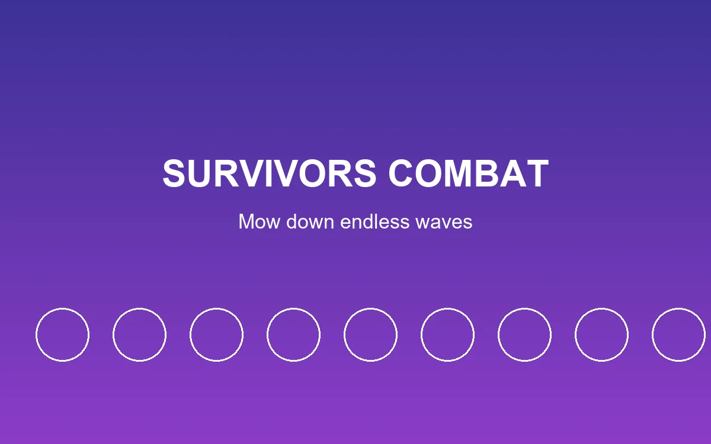
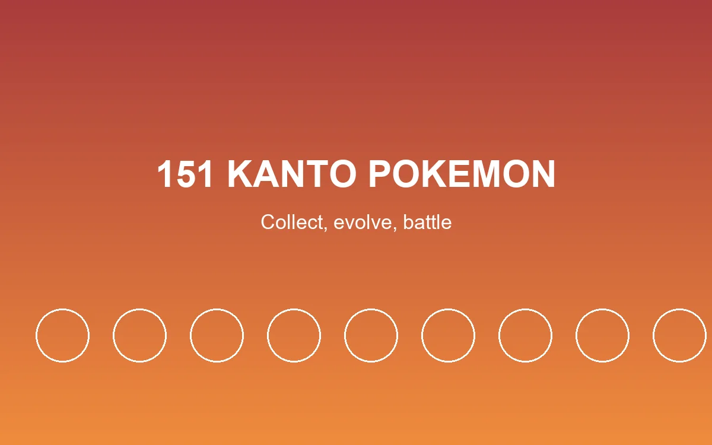
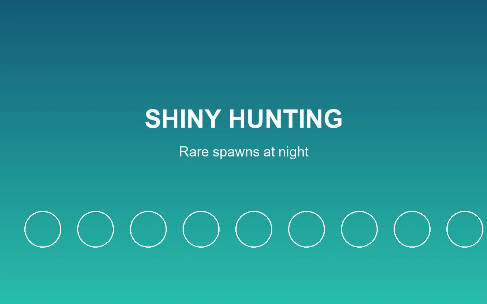

首發
pokebonk 爆紅：兩週 18.1 萬玩家
這款同人寶可夢倖存者遊戲測試上線幾天就爆紅，伺服器一度被擠爆。
閱讀全文pokebonk 是一款同人製作的寶可夢遊戲，把寶可夢的世界觀和《吸血鬼倖存者》《Megabonk》帶紅的倖存者割草玩法結合在一起。你選一隻關都御三家，被丟進一個隨機生成的區域，面對從四面八方湧上來的野生寶可夢。
大部分技能會自動施放，玩家只需要控制移動和跳躍，所以在手機上隨時開一局很輕鬆，但要鑽研到後期也有足夠深度。每次升級都會三選一強化，地圖上還散布著精靈球、祭壇、聖地、礦石和樹果，能給你額外技能、增益、金幣或回血。
全程在瀏覽器裡跑：不用下載客戶端、不用註冊帳號、不用安裝。點一下開始，選好御三家，幾秒內就能進入一局。
技能自動施放、升級三選一，一局接一局的「再玩一把」節奏。
第一世代全部收錄，數值和招式都依照原作設計。
夜晚會刷新稀有異色寶可夢，捉到就永久擁有。
電腦或手機瀏覽器都行，不用下載，適合零碎時間。



不用。pokebonk 是免費的同人作品，直接在瀏覽器玩，不需要註冊也不需要付費。
可以，手機瀏覽器就能跑。電腦螢幕較大，但手機觸控操作玩一局也很順。
角色達到 Lv.15 後，點擊右上角「福利」→「禮包碼兌換」輸入即可。所有有效禮包碼都整理在兌換碼頁面。
不是。pokebonk 是同人作品，與任天堂、Game Freak、The Pokémon Company 沒有任何隸屬關係。